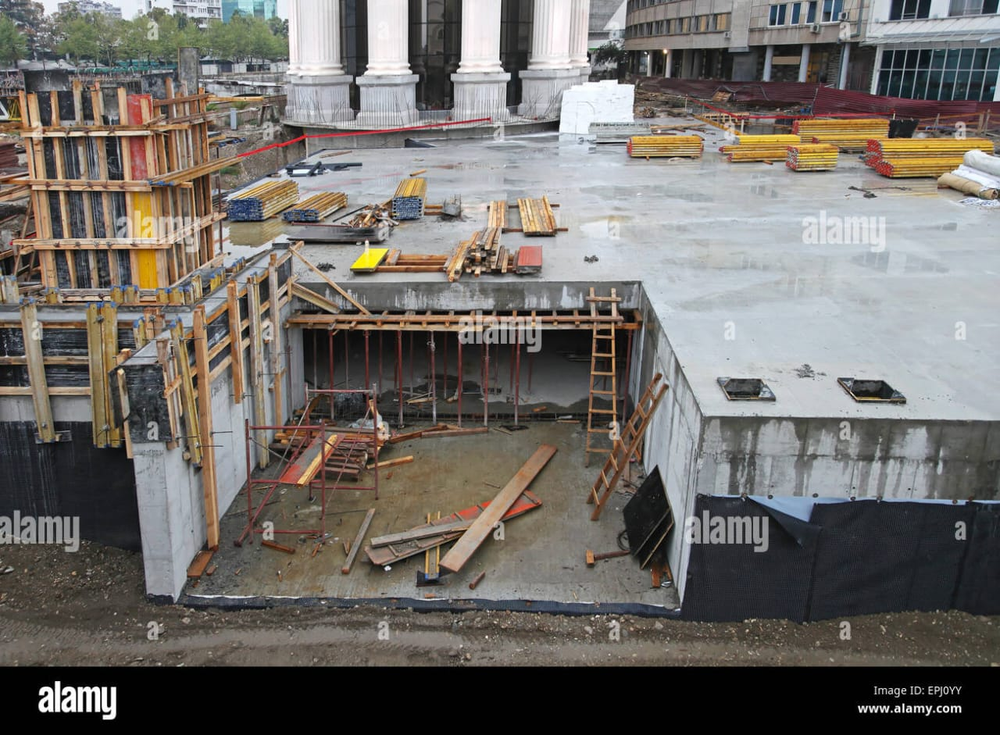

Basement in Civil Engineering
A basement is the lowest part of a building, either fully or partially below ground level. It adds usable space and enhances stability, often used for parking, storage, mechanical rooms, or even living areas—especially important in urban development.
🏗️ Purpose of a Basement
- Additional Space: Ideal for parking, utilities, or extra rooms without increasing height.
- Thermal Insulation: Acts as a buffer, helping with energy efficiency in all climates.
- Structural Support: Provides a strong base and resists lateral forces in tall buildings.
- Protection: Serves as a safe space during earthquakes or storms.
📊Types of Basements
- Partial Basement: Covers only part of the building, useful on sloped land.
- Full Basement: Covers the entire building footprint, maximizing space.
- Walk-Out Basement: Built into slopes with exterior access to a yard or street.
📌Design and Construction Considerations
- Excavation & Retaining Walls: Deep digging and walls to hold back surrounding soil.
- Waterproofing: Critical—membranes, additives, and drains prevent seepage.
- Ventilation & Lighting: Ensures fresh air and light through wells or mechanical systems.
- Drainage System: Includes sump pumps and floor drains for moisture control.
- Foundation Integration: Walls may also serve as structural support requiring precise design.
🏸Challenges in Basement Construction
- Groundwater Seepage
- Soil Pressure and Settlement
- High Construction Costs
- Municipal and Legal Approvals
📕Importance in Civil Engineering
- Efficient land use without increasing above-ground space
- Supports sustainable, vertical urban growth
- Enhances property value with additional space
- Crucial for public/commercial buildings (malls, hospitals, metros)
✅Conclusion
Basements play a vital role in modern civil engineering. With proper design, they offer safe, dry, and functional space while strengthening the structure. In growing cities, basements are key to smart, space-efficient construction.